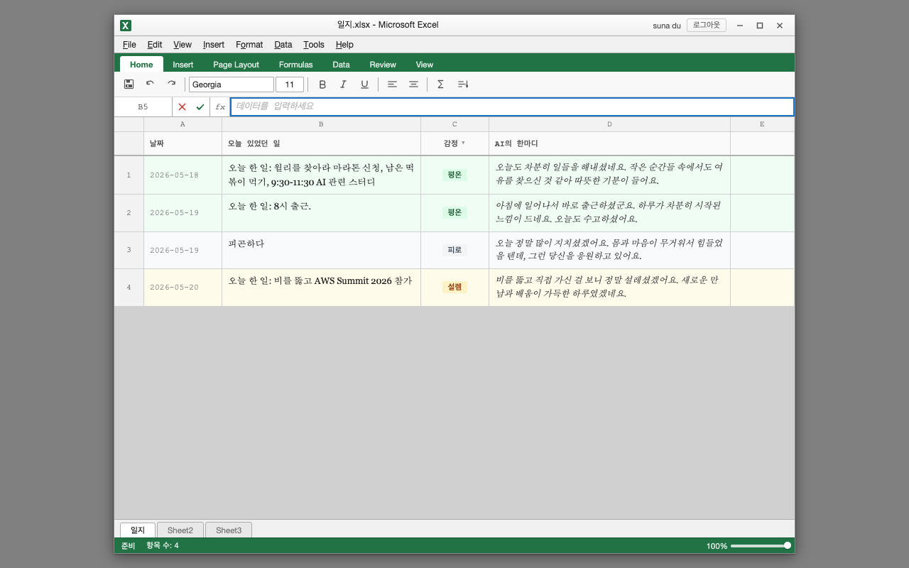
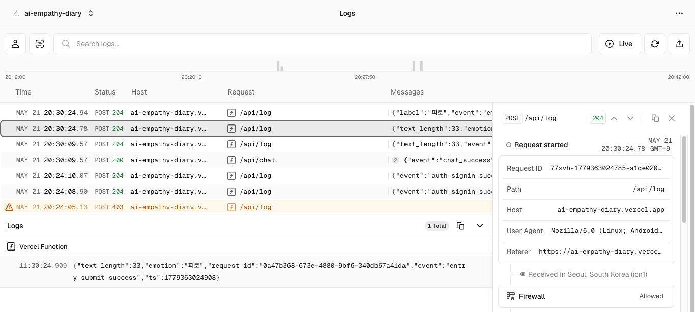
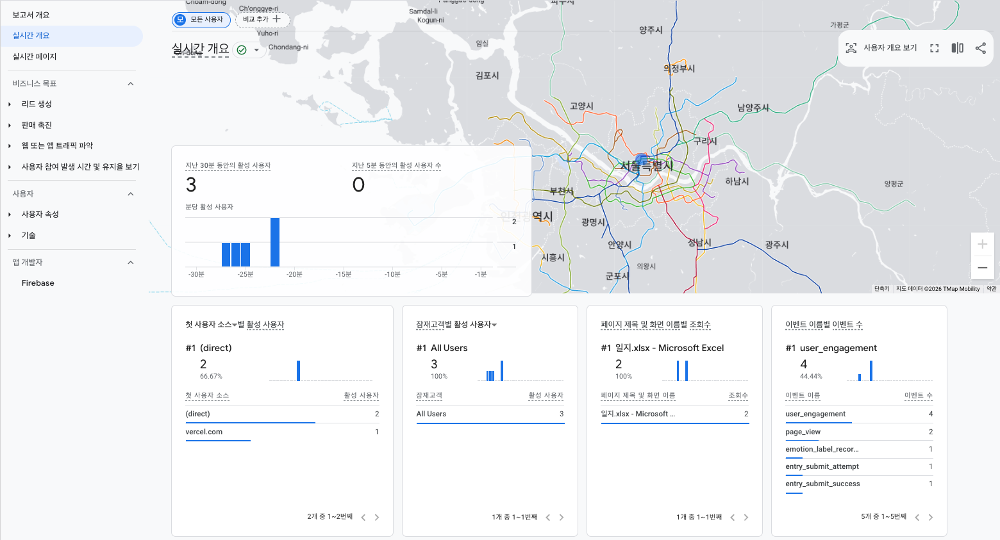
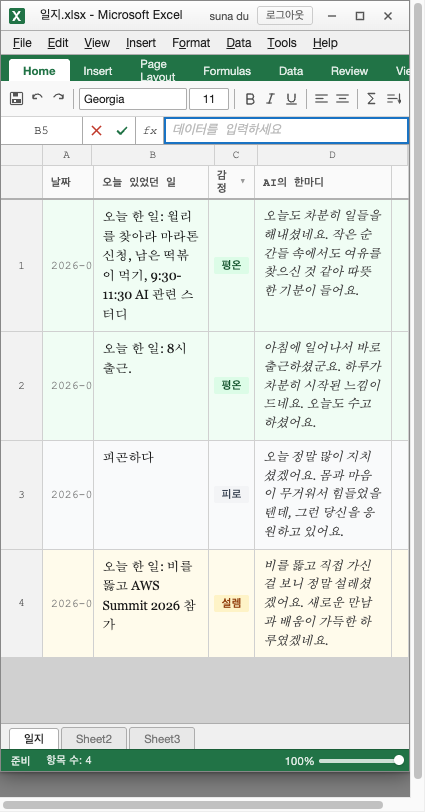
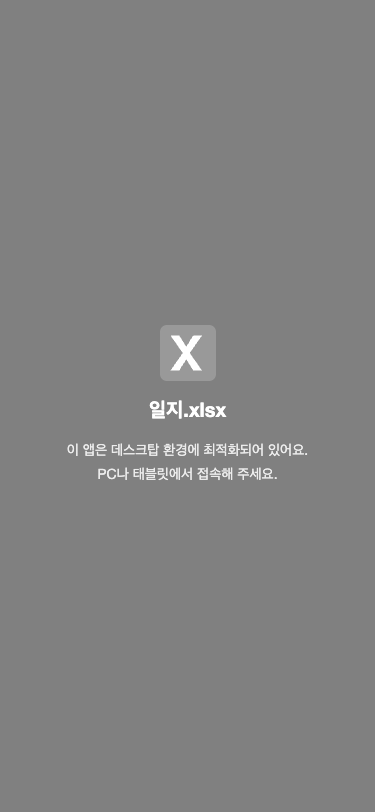

수산시장 · 스프린트 보고
Sprint 5 완료 보고
코드 구조 정돈 · 보안 강화 · AI 품질 기반
2026-05-20 — 2026-05-21
Sprint 5
Sprint 5 목표
코드 구조를 정돈하고, 보안 취약점을 닫으며,
AI 프롬프트 품질을 높여 앱의 지속 가능한 성장 기반을 만든다.
이월 결정
- 빌드 환경 도입 여부 (Vite vs 싱글 HTML)
- index.html 파일 분리 방향
- 동의 UX 배너 해외 출시 기준
- AI 관여 시점
신규 안건
- CORS 제한 (* → Vercel 도메인)
- 모바일 반응형 심화
- DAU 50+ 대비 P2 이벤트 검토
주요 결정
주요 결정 사항
| # | 결정 내용 | 담당 |
|---|
| 1 | Vite 도입 보류 — 싱글 HTML + 빌드 도구 없는 구조 유지 | PM + FE |
| 2 | CSS + config.js + utils.js 분리, index.html 800줄 이하 목표 | FE |
| 3 | 동의 UX 배너 기준 정의: non-KR 50명 / 비한국어권 공유 / 다국어 UI 중 하나 충족 시 | PM |
| 4 | AI 관여 시작: 프롬프트 리뷰 + 모델 근거 문서화 + 응답 샘플 기준선 보존 | AI + QA |
| 5 | api/log.js CORS → Vercel 도메인 + localhost 제한 | BE + FE |
| 6 | 모바일 카드 뷰 보류 → 안내 배너로 임시 대응 (≤599px) | FE |
| 7 | emotion_label_recorded 이벤트 추가 (P1.5) | BE + FE |
파일 분리
파일 분리 — index.html 656줄 달성
분리 결과
- styles/ — base · chrome · sheet · login
- config.js — 프롬프트 · 감정 상수 · COLUMN_LETTERS
- utils.js — escapeHtml · extractJson · normalizeEmotion
- ui.js — buildRow · renderRows · showError 등
QA 수정 (H/M/S)
- 스크립트 태그 <head> 내 이동 (H-1)
- POST CORS origin 체크 추가 (H-2)
- ALLOWED_ORIGINS 모듈 스코프 호이스팅 (M-4)
- emotion_label_recorded → Firestore 성공 후 발화 (S-2)

배포 후 앱 — 데이터 정상 로드
보안 강화 · 로그
CORS 강화 + emotion_label_recorded
CORS (api/log.js)
- Before
Access-Control-Allow-Origin: *
- After Vercel 프로덕션 도메인 + localhost
- 비허용 origin POST → 403 반환 확인 ✓
- localhost 204, 프로덕션 204 확인 ✓
emotion_label_recorded
- AI 감정 분석 성공 시 발화 (P1.5 이벤트)
- 파라미터:
{ label: string } (텍스트 원문 제외)
- Firestore write 성공 후 발화 (S-2 수정)
- Vercel Runtime Log 실사용 수신 확인 ✓
Runtime Log 수신 (05-21)

204 정상 수신 + 403 CORS 차단 확인
GA4 실시간 이벤트
Google Analytics — 실사용 이벤트 수집 확인

활성 사용자 3명 · emotion_label_recorded · entry_submit_success 실수집 확인 (2026-05-21)
화면 변경 · 모바일 대응
모바일 대응 — Before / After

Before 425px — 리본 줄바꿈, 컬럼 잘림

After ≤599px — 데스크탑 안내 배너
- 가로 스크롤 제거:
.excel-window { width: min(960px, 100%) }
- ≤599px: 모바일 안내 배너 표시, excel-window 숨김
- 로그인 화면 375px 정상 동작 유지 (position: fixed, z-index 1000)
다음 스프린트
이월 항목 / Sprint 6 방향
이월 (미완료)
- UX — AI 프롬프트 개선안 PM + UX 승인
- SRE — GA4 국가별 사용자 모니터링 설정
- PM — GA4 기기 유형별 이탈률 추적 (2주)
기술 부채
- api/chat.js CORS — Sprint 6 재검토
- api.js / storage.js 분리 — Vite 도입 시 일괄 처리
Sprint 6 후보
- AI 프롬프트 개선안 반영 (PM + UX 승인 후)
- 외부 공유 범위 확대 검토
- DAU 추적 시작
- 모바일 카드 뷰 — GA4 데이터 2주치 후 UX 설계
트리거 조건 (동의 배너)
- non-KR 누적 50명 초과
- 비한국어권 사용자에게 명시적 공유
- 다국어 UI 추가 시
Q&A
수산시장
ai-empathy-diary · Sprint 5 · 2026-05-21
ai-empathy-diary.vercel.app